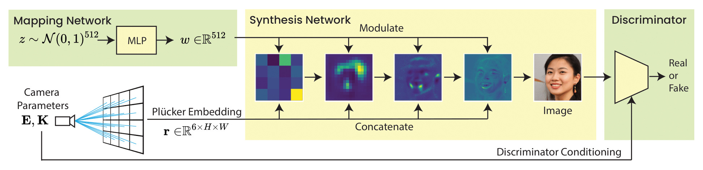

Ray Conditioning:
Trading Photo-Consistency for Photo-realism in multi-view image generation
1 Cornell University 2 Adobe Research
ICCV 2023
We propose ray conditioning, a lightweight and geometry-free technique for multi-view image generation.
Ray conditioning enables photo-realistic multi-view image editing on natural photos via GAN inversion. The left half shows headshots of four individuals and their corresponding synthesized results from another viewpoint. The right half shows a portrait of two individuals (top row), the GAN inversion results of their faces (top row corners), and the resulting image (bottom row), in which their faces are replaced with synthesized faces looking in a different direction (bottom row corners).
Abstract
Multi-view image generation attracts particular attention these days due to its promising 3D-related applications, e.g., image viewpoint editing. Most existing methods follow a paradigm where a 3D representation is first synthesized, and then rendered into 2D images to ensure photo-consistency across viewpoints. However, such explicit bias for photo-consistency sacrifices photo-realism, causing geometry artifacts and loss of fine-scale details when these methods are applied to edit real images. To address this issue, we propose ray conditioning, a geometry-free alternative that relaxes the photo-consistency constraint. Our method generates multi-view images by conditioning a 2D GAN on a light field prior. With explicit viewpoint control, state-of-the-art photo-realism and identity consistency, our method is particularly suited for the viewpoint editing task.
Explainer Video
Introduction
For certain classes of images with shared canonical structure, e.g. faces, we observe that it is possible to achieve viewpoint control without optimizing explicitly for 3D structure. The result is a modified 2D GAN that offers precise control over generated viewpoints without sacrificing photo-realism. Furthermore, we are able to train on data that does not contain multiple viewpoints of any single subject, letting us leverage the same diverse and abundant data used for regular GANs. Our method combines the photo-realism of existing GANs with the control offered by geometric models, outperforming related methods in both generation and inversion quality. This makes it particularly well-suited for viewpoint editing in static images.
Ray Conditioning
Ray conditioning is a technique to condition an image generator on the ray bundle of a camera for explicit viewpoint control. The spatial inductive bias of ray conditioning enables the image synthesizer to learn multi-view consistency from only single-view posed image collections.
Results
Latent samples of humans and cats. Ray conditioning enables a user to map images to set view points.
When trained on a multi-view dataset such as SRN Cars, ray conditioning is able to generate and render view consistent videos at the cost of a 2D GAN. Results are pictured with a truncation of 0.6.
Trading Photo-realism for Photo-consistency
However, we find that the benefits of photo-realism do not come for free. Photo-realism often comes at the expense of photo-consistency. For instance, with ray conditioning, when we try to generate smooth videos of faces, we find that viewpoint is often entangled with expression. Aliasing also occurs in the hair and teeth. Ultimately, we believe that our work opens a new design space in 3D image generation. We hope that our method can inspire new work in geometry-free image synthesis!
Acknowledgements
We thank Noah Snavely for helpful discussions, and the authors of EG3D and HFGI3D for kindly sharing datasets with us. This project was funded in part by a gift from Meta Reality Labs.
Citation
@InProceedings{chen2023:ray-conditioning,
author = {Chen, Eric Ming and Holalkere, Sidhanth and Yan, Ruyu and Zhang, Kai and Davis, Abe},
title = {Ray Conditioning: Trading Photo-consistency for Photo-realism in Multi-view Image Generation},
booktitle = {Proceedings of the IEEE/CVF International Conference on Computer Vision (ICCV)},
month = {October},
year = {2023},
pages = {23242-23251}
}
}